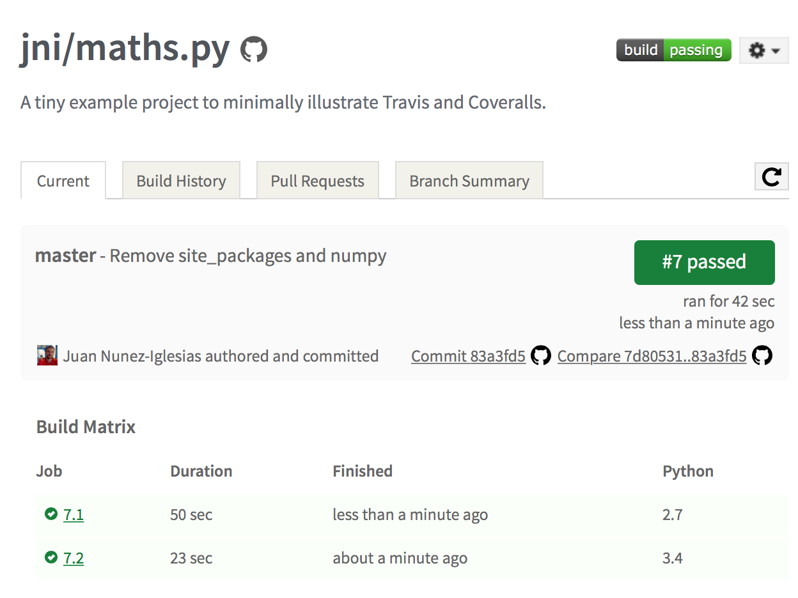

Continuous integration in Python, 4: set up Travis-CI
Introduction to Travis-CI
Once you've set up your tests locally, it does you no good if you don't remember to run them! Travis-CI makes this seamless, because it will check out your code and run you tests for each and every commit you push to GitHub! (This is even more important when you are receiving pull requests on GitHub: the tests will be run online, without you having to individually check out each PR and run the tests on your machine!) .. has_math: no .. status: published .. wp-status: publish -->
This is the fourth post in my Continuous integration (CI) in Python series, and the one that puts the "continuous" in CI! For the introductory three posts, see:
Introduction to Travis-CI
Once you've set up your tests locally, it does you no good if you don't remember to run them! Travis-CI makes this seamless, because it will check out your code and run you tests for each and every commit you push to GitHub! (This is even more important when you are receiving pull requests on GitHub: the tests will be run online, without you having to individually check out each PR and run the tests on your machine!)
This is what continuous integration is all about. Once upon a time, the common practice was to pile on new features on a codebase. Then, come release time, there would be a feature freeze, and some time would be spent cleaning up code and removing bugs. In continuous integration, instead, no new feature is allowed into the codebase until it is bug free, as demonstrated by the test suite.
What to do
You need to first add a .travis.yml file to the root of your project. This tells Travis how to install your program's dependencies, install your program, and run the tests. Here's an example file to run tests and coverage on our maths.py sample project:
[code lang=text] language: python python: - "2.7" - "3.4" before_install: - pip install pytest pytest-cov script: - py.test [/code]
Pretty simple: tell Travis the language of your project, the Python version (you can specify multiple versions, one per line, to test on multiple Python versions!), how to install test dependencies. Finally, the command to run your tests. (This can be anything, not just pytest or another testing framework, as long as a shell exit status of 0 means "success" and anything else means "failure".)
You can read more about the syntax and options for your .travis.yml in the Travis documentation. There are other sections you can add, such as "virtualenv" to set up Python virtual environments, "install" to add compilation and other installation steps for your library, before testing, and "after_success" to enable e.g. custom notifications. (We will use this last one in the next post.)
Once you have created .travis.yml for your project, you need to turn it on for your repo. This is, currently, a fairly painful process, and I can't wait for the day that it's enabled by default on GitHub. [Update: see below] In the meantime though:
Go to your project settings page on GitHub.Click on webhooks & services.Click on add service, searching for "Travis".You'll be taken to the GitHub Travis configuration page. Mine was pre-populated with the Travis token, but you might have to click on the link to your Travis profile, and click on the "Profile" tab to retrieve your token.- In the Travis profile page, in the "Repositories" tab, click Sync now to get your list of repos, and flick the switch for your current repo.
[Update 2014-10-28: Thanks to @hugovk for pointing out that the first four points above can be skipped. It turns out that when you first log in to Travis-CI using your GitHub account, you give them write access to your webhooks. So, when you add a repo from their end, they go ahead and add themselves on the GitHub end! Boom. Way easier.]
https://twitter.com/hugovk/status/526798595442618368
Voilà! Every push and pull-request to your repository will trigger a job on Travis's servers, building your dependencies and your software, running your tests, and emailing you if anything went wrong! Amazingly, this is completely free for open source projects, so you really have no excuse for not using it!

Follow this blog to learn how to continuously check test coverage using Coveralls, coming in the next post!
Update: Volume 5: turn on Coveralls


{kind=link}
{kind=link}
{kind=link}
{kind=link}
{kind=link}